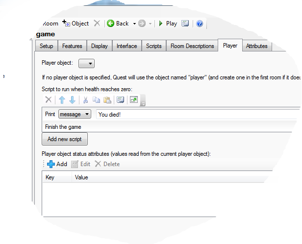

Score, Health and Money
Quest offers an easy way to incorporate these common attributes in your game. The first step is to go to the Features tab of the game object, and to turn on the ones that you want in your game.
To change the values, use one of these script commands (they will only be present if the relevant option was selected on the Features tab):
Here you can see the “Increase score” script command, set to add 5 to the player score:
It you prefer to do this in code, you just need to add to or subtract from the attribute.
game.score = game.score + 5
player.health = player.health - 5
player.money = player.money - 199
If your game is set to display the panes on the right, score, health and money will automatically be added to the status pane, if ticked on the Features tab.
Score
Score is the simplest. The score attribute belongs to the game object, so is the same even if the player can change to other characters during the game. It starts at zero.
Health
The health attribute belongs to the player object (or objects, if you have more than one). Health is treated as a percentage, so starts at 100, and is capped at that (if you try to set it to 120, it will become 100).
On the Player tab of the game object, you can set what happens when health goes to zero or less. Here is a simple example that gives a message and then ends the game (which is probably all you need):

Here it is in code (just to show how simple it is):
msg ("You died!")
finish
You can set an object to be food (or a potion, or whatever) that will heal the player. Go to the Features of the object and tick “Edible”, then go to the Edible tab, select “Can be eaten”. You can then set how much health the food will give the player.
NOTE If you want a more flexible health system, for example you want to be able to set the maximum health, you are best starting from scratch with a custom attribute, not called “health”, and turning off the health feature.
Money
Like health, money is an attribute of the player object. By default, money starts at zero, but you can change that on the Player tab of the player object (and if you have several player objects, you can give each their own money).
By default, money is displayed in dollars, but you can change the format on the Player tab of the game object. The exclamation mark in the string stands for the actual value, so if the player currently has money equal to 235:
$!
-> $235
! credits
-> 235 credits
The money format string is also used by the DisplayMoney function, and has a lot of optins beyond the scope of this page, but can be seen here.
When “Money” is ticked, you will find there is a “Price” number box for every object on its Inventory tab.